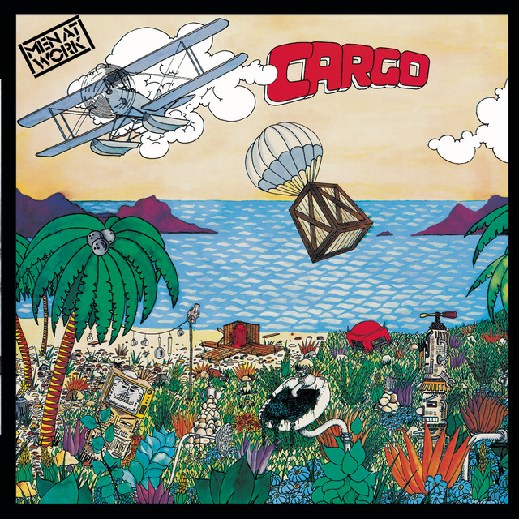
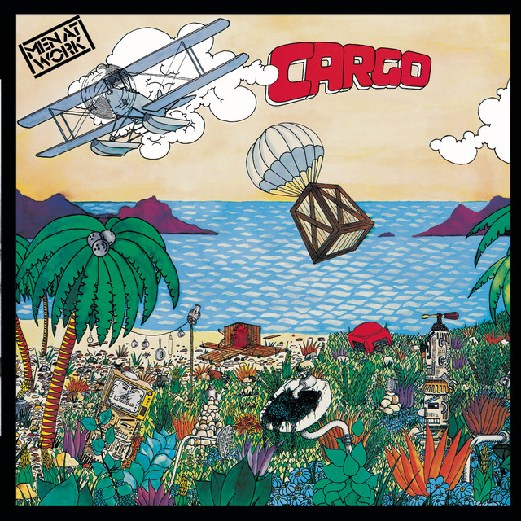
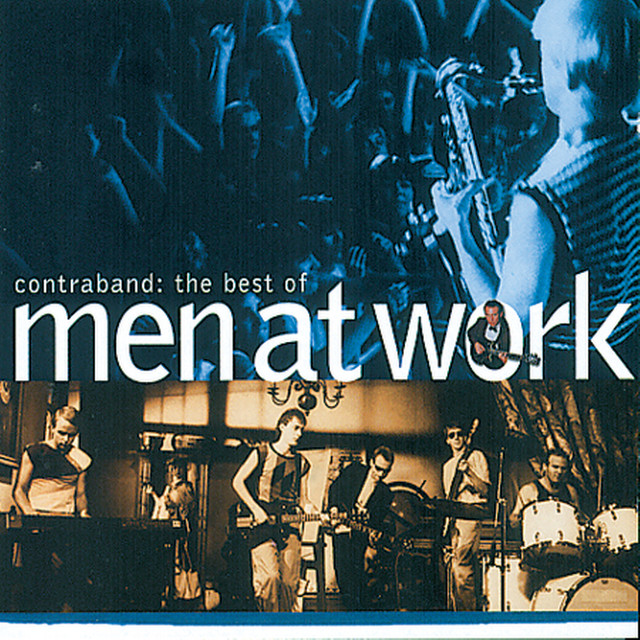
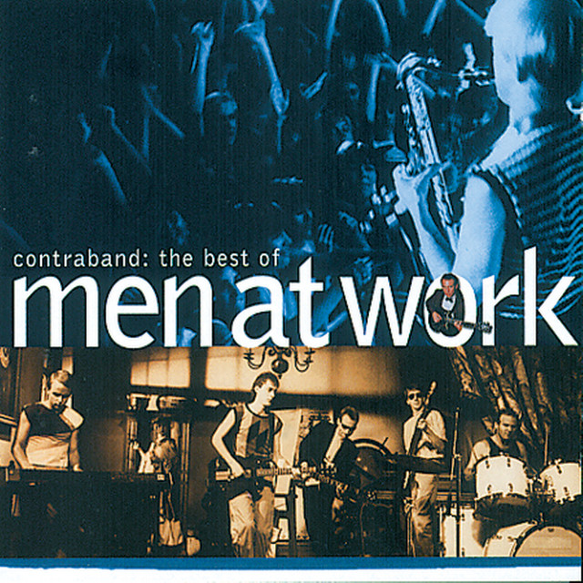
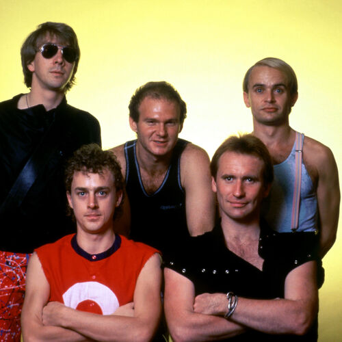

Historia
Men at Work es una banda australiana de rock formada el 1978 a Melbourne. La banda es mes coneguda pel seu exit mundial el 1982 amb la canço "Down Under".
El grup es va dissoldre el 1986, pero es van reunir breument el 1996 abans de separar-se novament. El 2012, Men at Work es va reformar amb un nou vocalista i continua realitzant gires a tot el mon.
Discografia
· Business as Usual (1981)
· Cargo (1983)
· Two Hearts (1985)
· Contraband: The Best of Men at Work (1992)
 

 

Integrants

· Colin Hay - veu, guitarra acustica
· Greg Ham - saxofo, teclats, flauta
· John Rees - baix
· Jerry Speiser - bateria
· Ron Strykert - guitarra electrica